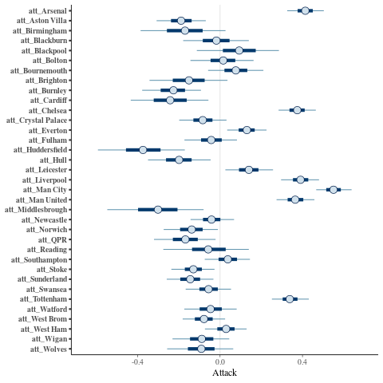

As far as I can think right now (not very far), there are two things you typically want to do once you have a model and done some inference:
The former allows you to evaluate the relative strengths of models and answer questions like "should I use this model or that model?". The latter allows you to look for problems in your model and helps with answering "is my model any good?".
In this post I am going to focus on the latter, and consider a basic posterior predictive check (PPC).
I've used a simple model (disclaimer: I already know plenty of things that are wrong with it) concerned with predicting the number of goals scored by competing soccer teams in the English Premier League during the seasons 2010/2011 - 2018/2019. The model assumes that the number of goals scored by each team follows an independent Poisson distribution with rates dependant on the strength of the teams and a home advantage. The data is downloaded in CSV format from www.football-data.co.uk.
I will not discuss the model in more detail than saying that there is an "attack" and "defence" parameter for each team, and the model is defined by scoring rates of:
\begin{align*} \log(\lambda_h) &= \alpha + \gamma + att_h - def_a \\ \log(\lambda_a) &= \alpha + att_a - def_h \end{align*}for the home (\(h\)) and away (\(a\)) teams respectively, where \(\alpha\) is an intercept term, \(\gamma\) is the home advantage term, \(att_k\) is the attacking strength of team \(k\), and \(def_k\) is the defensive strength of team \(k\).
This type of model has been discussed loads, for anyone interested please read Dixon and Coles (1997) which I can't believe is now over 20 years old! Incidentally, Stuart Coles (one of the authors of the linked paper) now runs a blog - Smartodds Loves Statistics - which is worth a read.
Anyway, here is the model coded up in stan, plus some prior stuff (nothing particularly interesting or informative) that I haven't bothered to discuss since it is not the point of this post:
data { int<lower = 0> n; int<lower = 0> n_teams; int<lower = 1, upper = n_teams> home_team[n]; int<lower = 1, upper = n_teams> away_team[n]; int<lower = 0> home_goals[n]; int<lower = 0> away_goals[n]; } parameters { real alpha; real gamma; vector[n_teams] att; vector[n_teams] def; real<lower = 0.0> sigma_teams; } transformed parameters { vector[n] home_log_rate = alpha + gamma + att[home_team] - def[away_team]; vector[n] away_log_rate = alpha + att[away_team] - def[home_team]; } model { alpha ~ normal(0.0, 1.0); gamma ~ normal(0.0, 1.0); att ~ normal(0.0, sigma_teams); def ~ normal(0.0, sigma_teams); sigma_teams ~ normal(0.0, 1.0); home_goals ~ poisson_log(home_log_rate); away_goals ~ poisson_log(away_log_rate); } generated quantities { int rep_home_goals[n] = poisson_log_rng(home_log_rate); int rep_away_goals[n] = poisson_log_rng(away_log_rate); }
Let's also have a brief look at the data:
library(readr) library(dplyr) soccer_data <- lapply(10:18, function(x) { season <- paste0(x, x + 1) url <- file.path("http://www.football-data.co.uk/mmz4281", season, "E0.csv") read_csv(url, col_types = cols()) }) %>% bind_rows() soccer_teams <- sort(unique(c(soccer_data$HomeTeam, soccer_data$AwayTeam))) soccer_data <- soccer_data %>% mutate(home_team = factor(HomeTeam, soccer_teams), away_team = factor(AwayTeam, soccer_teams), home_goals = as.integer(FTHG), away_goals = as.integer(FTAG)) %>% select(matches("^home_|^away_")) %>% filter(complete.cases(.)) print(soccer_data %>% head())
| Aston Villa | West Ham | 3 | 0 |
| Blackburn | Everton | 1 | 0 |
| Bolton | Fulham | 0 | 0 |
| Chelsea | West Brom | 6 | 0 |
| Sunderland | Birmingham | 2 | 2 |
| Tottenham | Man City | 0 | 0 |
All looks good… Now we can perform inference:
library(rstan) options(mc.cores = parallel::detectCores()) rstan_options(auto_write = TRUE) NUM_CHAINS <- 3 NUM_SAMPLES <- 1000 NUM_WARMUP <- 1000 model <- stan_model(stan_file) fit <- sampling(model, seed = 666, chains = NUM_CHAINS, warmup = NUM_WARMUP, iter = NUM_WARMUP + NUM_SAMPLES, pars = c("home_log_rate", "away_log_rate"), include = FALSE, data = list(n = nrow(soccer_data), n_teams = length(soccer_teams), home_team = unclass(soccer_data$home_team), away_team = unclass(soccer_data$away_team), home_goals = soccer_data$home_goals, away_goals = soccer_data$away_goals))
It's a bit daunting to look at all that data in a table (i.e. print(fit)) and
also it doesn't show the team names. Luckily, it is very easy to do some nice
plots using bayesplot if we transform the fit to an array and rename some of the
dimensions. Here are the non team specific parameter estimates:
library(bayesplot) library(ggplot2) posterior <- as.array(fit) nmes <- dimnames(posterior)$parameters dimnames(posterior)$parameters[grep("^att\\[", nmes)] <- paste0("att_", soccer_teams) dimnames(posterior)$parameters[grep("^def\\[", nmes)] <- paste0("def_", soccer_teams) mcmc_pairs(posterior, pars = c("alpha", "gamma", "sigma_teams"))
The team attack parameters:
mcmc_intervals(posterior, regex_pars = "^att_") + xlab("Attack")

The team defence parameters:
mcmc_intervals(posterior, regex_pars = "^def_") + xlab("Defence")
So looks fairly sensible. Great. I also had a look at Diagnostic plots for the No-U-Turn-Sampler and some other things but don't want to clutter this post with them.
The point of this was to consider PPC so here it is. The idea is to generate
replication datasets drawn from the posterior predictive distribution and see if
they are consistent with our observed data. The observed data/response is
typically denoted \(y\) and the simulated replications \(y_{rep}\). This is why
at the bottom of the stan code above we use the generated quantities block to
simulate home and away goals.
I'm only going to consider (home team) supremacy here, which is the number of goals the home team wins by (e.g. a supremacy of 0 is a draw). It will be apparent why afterwards (I hope).
Unfortunately in doing this I stumbled upon what has now been filled as a bug in the bayesplot package. Many thanks to Jonah Gabry for getting back to me about it so quickly! Nevertheless I hacked the package (deleted a few lines) and now we can look at observed and simulated supremacy:
MAX_SUPREMACY <- 5 clamp <- function(x) { pmin(pmax(x, -MAX_SUPREMACY), MAX_SUPREMACY) } observed_supremacy <- soccer_data$home_goals - soccer_data$away_goals rep_home_goals <- posterior[ , , grep("^rep_home_goals\\[", nmes)] rep_away_goals <- posterior[ , , grep("^rep_away_goals\\[", nmes)] rep_supremacy <- matrix(rep_home_goals - rep_away_goals, NUM_CHAINS * NUM_SAMPLES, nrow(soccer_data)) ppc_bars(clamp(observed_supremacy), clamp(rep_supremacy), freq = FALSE) + xlab("Supremacy")
So what does that mean? Well, it looks like (as I was hoping for) the model underestimates the probability of 0 supremacy (a draw). This has been noted in lots of papers and it makes sense - the model assumes independence in the home and away goals, or in other words, that the teams just keep playing the same throughout the match regardless of the score.
There are lots of other things to look at too, for example you can consider the total number of goals, the number of home/away goals, test statistics like the mean or maximum number of goals. It may also be worth considering grouping the data by season or league (if I had bothered to use multiple leagues).
In conclusion, I think PPCs are a really powerful and intuitive way to explore models and I hope to see and use more of them where applicable.